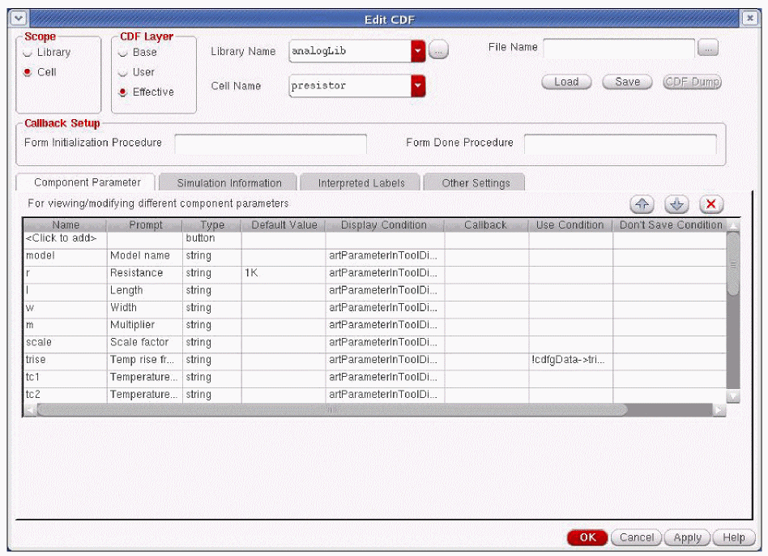

10
Voltage Source Regions
Overview
To minimize the EM/IR Drop in the I/O pads, Power IR/EM provides the capability to create voltage source regions in the design before simulation. This helps in avoiding false EM/IR violations by ensuring minimum EM/IR Drop in selected pads in the design.
Creating Voltage Source Regions
Follow these steps to create voltage source regions.
-
In the VPS-L menu, choose Analyze Extracted View Pin(s) – Create Voltage Source Regions. This is shown in the image below.
Figure 10-1 Virtuoso Layout Suite L – Voltage Source Regions -
The Select Voltage Pad Regions form opens.
Figure 10-2 Selecting the Voltage Source Regions
- In this form, select Append to existing file to add the source regions created in the previous runs.
-
Select Define new region to select the region where you want to create a source in the design. Click and drag the cursor to define the region on the layout. When you select the region on the layout, the software selects all instances connected to the power rails and skips all instances connected to signals. The selected source region gets added in the list box provided under the Regions field in the Select Voltage Pad Regions form. This is shown below.
If the selected region has multiple power rails, the Select Pin form opens. In this form, you can select the pin and click OK. This form is shown below.
-
In the Virtuoso Command Interpreter Window (CIW), select Tools - CDF - Edit. This is shown below.
Figure 10-4 Virtuoso Command Interpreter Window - Accessing Edit CDF Form -
The Edit CDF form appears. This form is shown below. Select the Cadence analog Library Name (analogLib) and Cell Name (presistor).
Figure 10-5 Edit CDF Form -
Select Simulation Information tab. The form is shown below.
Figure 10-6 Edit CDF Form - Simulation Information- To select the type of simulator, in the Choose Listing field, select By Simulator. From the drop-down list, select Spectre as the simulator.
-
Select the netlist procedure,
vsaNetlistProc. For details about this function, see vsaNetlistProc. - Click Apply and then click OK.
- Run Spectre simulation. See Running a Spectre Simulation in the “IR/EM Analysis Flow” chapter.
- Perform EM/IR analysis. See EM Analysis of the Power Grid in the “EM Analysis” chapter or IR Drop Analysis in the “IR Drop Analysis” chapter.
- The EM analysis results appear in the Electromigration Analysis Results form. In this form, you can select and highlight a presistor in the design on the layout.
SKILL Function
vsaNetlistProc
vsaNetlistProc(
)
=> t/nil
Description
Specifies the pre-defined netlist procedure used for simulation. This function is used to inform the simulator about pad regions, which are regions in the design with zero voltage drop.
After defining the pad regions in the design, you have to set up calls for vsaNetlistProc before netlisting. You can also specify your own netlist procedure along with the pre-defined netlist procedure by calling the pre-defined procedure into your netlist procedure destination.
Arguments
Values Returned
|
Returns |
|
|
Returns |
Return to top